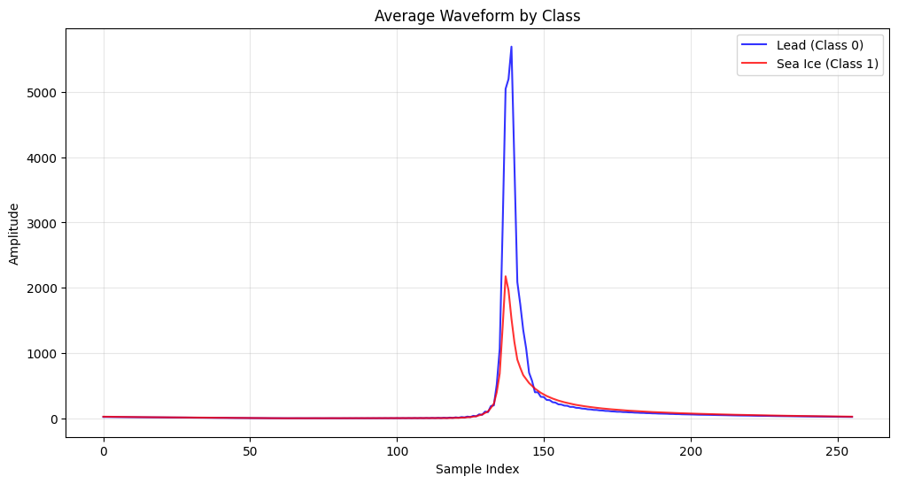
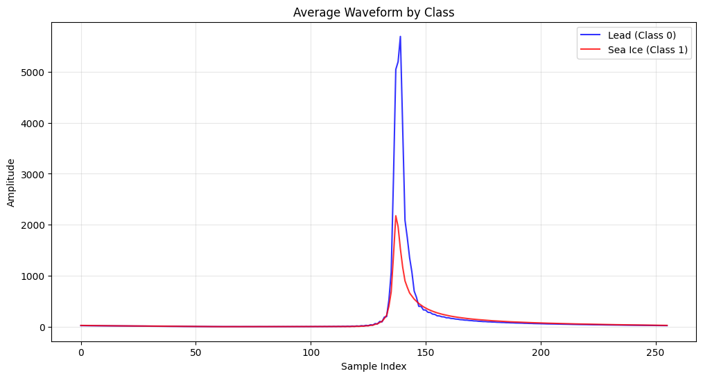

XAI for Sea Ice Classification of Full Waveform#
This notebook demonstrates techniques for classifying sea ice and leads from waveform data using both deep learning and tree-based methods and the ways to show which part of the waveform contributes the most to the classification.
Models Implemented#
CNN: Captures patterns directly from raw waveforms
Random Forest: Robust ensemble approach with inherent feature importance
Gradient Boosting: Sequential learning focused on misclassification correction
XGBoost: Optimized gradient boosting with regularization
Key Analysis Techniques#
Consistent preprocessing of variable-length waveforms
Feature importance visualization overlaid on waveform patterns
SHAP values for CNN interpretability
Model comparison with confusion matrices
The notebook identifies which parts of radar waveforms are most discriminative for sea ice classification, offering insights that may improve for waveform classification.
from google.colab import drive
drive.mount('/content/drive')
Mounted at /content/drive
1. Data Preprocessing#
Reads waveform data from a CSV file and processes it into structured arrays.
Parses waveforms from string representations and ensures uniform length through truncation or zero-padding.
Handles missing values and class label inconsistencies.
Splits data into training and test sets while scaling features for consistency.
Visualizes class distributions and waveform patterns for exploratory analysis.
2. CNN Model for Waveform Classification#
Implements a 1D Convolutional Neural Network (CNN) to classify sea ice and leads from radar waveforms.
Uses multiple convolutional layers with batch normalization, max pooling, dropout, and dense layers.
Compiles with the Adam optimizer and binary cross-entropy loss, monitoring performance with accuracy and AUC metrics.
Trains with early stopping and learning rate reduction strategies to prevent overfitting.
Plots training history to assess model performance over epochs.
3. Model Evaluation & Explainability (SHAP & Gradients)#
Evaluates the trained CNN model on the test set, reporting accuracy, confusion matrix, and classification metrics.
Uses SHAP (SHapley Additive Explanations) values to interpret feature importance, identifying key waveform regions influencing classification.
Helps in understanding which waveform characteristics contribute most to sea ice classification decisions.
import numpy as np
import pandas as pd
import matplotlib.pyplot as plt
from sklearn.model_selection import train_test_split, cross_val_score, StratifiedKFold
from sklearn.preprocessing import StandardScaler
from sklearn.metrics import classification_report, confusion_matrix, accuracy_score, roc_curve, auc
import tensorflow as tf
from tensorflow.keras.models import Sequential
from tensorflow.keras.layers import Dense, Dropout, Conv1D, MaxPooling1D, Flatten, BatchNormalization
from tensorflow.keras.callbacks import EarlyStopping, ReduceLROnPlateau
import seaborn as sns
import ast
roughness = pd.read_csv('/content/drive/MyDrive/Teaching_Michel/GEOL0069/StudentFolder20242025/Week 9/updated_filtered_matched_uit_sentinel3_L2_alongtrack_2023_04_official.txt')
print(roughness)
# ----- 1. Data Preprocessing -----
# Function to parse string representation of waveform array into numeric values
def parse_waveform(waveform_str):
"""Parse the string representation of waveform array into numeric values"""
cleaned_str = waveform_str.replace('e+', 'e').replace(' ', '')
try:
# Use ast.literal_eval for safe evaluation of the string as a list
waveform_list = ast.literal_eval(cleaned_str)
return np.array(waveform_list)
except (SyntaxError, ValueError) as e:
try:
# Manual parsing fallback
values_str = waveform_str.strip('[]').split(',')
values = []
for val in values_str:
val = val.strip()
if val: # Skip empty strings
values.append(float(val))
return np.array(values)
except Exception as e2:
print(f"Error parsing waveform: {e2}")
return np.array([])
def roll_waveform(waveform):
n_bins = waveform.shape[0]
rolled_waveform = np.zeros_like(waveform)
# Find the first bin that is 10x higher than all previous bins
target_bin = None
for j in range(1, n_bins):
if waveform[j] >= 10 * np.mean(waveform[:j]):
target_bin = j
break
# print('target_bin',target_bin)
# If no such bin is found, keep the waveform unchanged
if target_bin is None:
rolled_waveform = waveform
else:
# Roll the waveform to place the target_bin in the center
center_bin = n_bins // 2
shift = center_bin - target_bin
rolled_waveform = np.roll(waveform, shift)
return rolled_waveform
# Extract waveforms and prepare data
print("Processing waveforms and extracting class labels...")
# Sample one waveform to determine expected length
sample_idx = 0
while True:
try:
sample_waveform = parse_waveform(str(roughness['Matched_Waveform_20_Ku'].iloc[sample_idx]))
if len(sample_waveform) > 0:
expected_length = len(sample_waveform)
print(f"Expected waveform length: {expected_length}")
break
sample_idx += 1
except:
sample_idx += 1
if sample_idx >= len(roughness):
print("Could not determine expected waveform length. Using 256 as default.")
expected_length = 256
break
target_column = 'Sea_Ice_Class'
# Check if target exists
if target_column not in roughness.columns:
print(f"Warning: {target_column} not found. Available columns: {roughness.columns}")
print("Will use 'Lead_Class' as target instead.")
target_column = 'Lead_Class'
# Process waveforms and extract class labels
X_list = []
y_list = []
valid_indices = []
for idx, row in roughness.iterrows():
if idx % 500 == 0:
print(f"Processing row {idx}/{len(roughness)}...")
try:
waveform_str = str(row['Matched_Waveform_20_Ku'])
waveform_array = parse_waveform(waveform_str)
rolled_waveform_array = roll_waveform(waveform_array)
# print('max ',np.max(waveform_array), np.max(rolled_waveform_array), waveform_array.shape, rolled_waveform_array.shape)
class_label = int(row[target_column])
if len(waveform_array) > 0:
if len(waveform_array) > expected_length:
waveform_array = waveform_array[:expected_length] # Truncate
rolled_waveform_array = roll_waveform(waveform_array)
elif len(waveform_array) < expected_length:
padded = np.zeros(expected_length)
padded[:len(waveform_array)] = waveform_array # Pad with zeros
waveform_array = padded
rolled_waveform_array = roll_waveform(waveform_array)
# Append
# X_list.append(waveform_array)
X_list.append(rolled_waveform_array)
y_list.append(class_label)
valid_indices.append(idx)
except Exception as e:
if idx < 5: # Print first few errors
print(f"Error processing row {idx}: {e}")
continue
# Convert to numpy arrays
print(f"Creating numpy array with {len(X_list)} waveforms of length {expected_length}...")
X = np.stack(X_list) # Use stack instead of array for potentially inconsistent shapes
y = np.array(y_list)
print(f"X shape: {X.shape}, y shape: {y.shape}")
# Check for NaN values and remove them
nan_mask_X = np.isnan(X).any(axis=1)
nan_mask_y = np.isnan(y)
nan_mask = nan_mask_X | nan_mask_y
X_clean = X[~nan_mask]
y_clean = y[~nan_mask]
print(f"Removed {np.sum(nan_mask)} samples with NaN values")
print(f"Processed {len(X_clean)} valid waveforms")
print(f"Waveform shape: {X_clean.shape}")
print(f"Class distribution: {np.bincount(y_clean)}")
# Visualize class distribution
plt.figure(figsize=(8, 5))
sns.countplot(x=y_clean)
plt.title('Class Distribution')
plt.xlabel('Class (0=Lead, 1=Sea Ice)')
plt.ylabel('Count')
plt.grid(True, alpha=0.3)
plt.show()
# Visualize average waveforms by class
plt.figure(figsize=(12, 6))
waveforms_class0 = X_clean[y_clean == 0]
waveforms_class1 = X_clean[y_clean == 1]
# align echoes
if len(waveforms_class0) > 0:
plt.plot(np.mean(waveforms_class0, axis=0), 'b-', label='Lead (Class 0)', alpha=0.8)
if len(waveforms_class1) > 0:
plt.plot(np.mean(waveforms_class1, axis=0), 'r-', label='Sea Ice (Class 1)', alpha=0.8)
plt.title('Average Waveform by Class')
plt.xlabel('Sample Index')
plt.ylabel('Amplitude')
plt.legend()
plt.grid(True, alpha=0.3)
plt.show()
# Split the data
X_train, X_test, y_train, y_test = train_test_split(
X_clean, y_clean, test_size=0.2, random_state=42, stratify=y_clean
)
# Scale the data
scaler = StandardScaler()
X_train_scaled = scaler.fit_transform(X_train)
X_test_scaled = scaler.transform(X_test)
3A=0_3B=1 Orbit_# Segment_# Datenumber Latitude Longitude \
0 0 1 1 738977.028790 74.432732 -73.103512
1 0 1 1 738977.028790 74.435182 -73.109831
2 0 1 1 738977.028791 74.437633 -73.116151
3 0 1 1 738977.028791 74.440083 -73.122474
4 0 1 1 738977.028792 74.442533 -73.128797
... ... ... ... ... ... ...
28720 0 843 843 739006.699439 71.763165 -74.486482
28721 0 843 843 739006.699440 71.760574 -74.491177
28722 0 843 843 739006.699440 71.757982 -74.495872
28723 0 843 843 739006.699450 71.711313 -74.580159
28724 0 843 843 739006.699451 71.708719 -74.584830
Radar_Freeboard Surface_Height_WGS84 Sea_Surface_Height_Interp_WGS84 \
0 -0.044136 14.319994 14.364129
1 -0.099506 14.265998 14.365504
2 0.029215 14.396251 14.367035
3 0.062597 14.431502 14.368905
4 -0.044797 14.326136 14.370932
... ... ... ...
28720 0.362561 0.308307 -0.054254
28721 0.276995 0.205567 -0.071428
28722 0.301225 0.211470 -0.089755
28723 0.165803 -0.241391 -0.407193
28724 0.255920 -0.165441 -0.421361
SSH_Uncertainty ... Lead_Class Sea_Ice_Roughness \
0 0.000254 ... 0 0.017885
1 0.000232 ... 0 0.003315
2 0.000212 ... 0 0.018211
3 0.000192 ... 0 0.051418
4 0.000173 ... 0 0.046983
... ... ... ... ...
28720 0.014538 ... 0 0.067003
28721 0.014706 ... 0 0.040842
28722 0.014876 ... 0 0.034679
28723 0.018095 ... 0 0.443806
28724 0.018284 ... 0 0.058687
Sea_Ice_Concentration Seconds_since_2000 Year Month Day \
0 1.0000 7.336249e+08 2023 4 1
1 1.0000 7.336249e+08 2023 4 1
2 1.0000 7.336249e+08 2023 4 1
3 1.0000 7.336249e+08 2023 4 1
4 1.0000 7.336249e+08 2023 4 1
... ... ... ... ... ...
28720 0.9083 7.361884e+08 2023 4 30
28721 0.9083 7.361884e+08 2023 4 30
28722 0.9083 7.361884e+08 2023 4 30
28723 0.9083 7.361884e+08 2023 4 30
28724 0.9083 7.361884e+08 2023 4 30
Proj_X Proj_Y \
0 646585.001913 8.269660e+06
1 646373.758053 8.269917e+06
2 646162.531358 8.270174e+06
3 645951.280450 8.270431e+06
4 645740.085773 8.270688e+06
... ... ...
28720 622709.601630 7.969277e+06
28721 622562.605479 7.968979e+06
28722 622415.569925 7.968680e+06
28723 619768.967681 7.963311e+06
28724 619621.913813 7.963013e+06
Matched_Waveform_20_Ku
0 [2.524e+00,2.780e+00,2.194e+00,2.286e+00,2.054...
1 [2.381e+00,2.182e+00,2.332e+00,2.352e+00,1.857...
2 [2.173e+00,1.961e+00,2.388e+00,2.075e+00,2.609...
3 [2.202e+00,2.223e+00,2.049e+00,2.213e+00,2.138...
4 [3.252e+00,2.874e+00,2.988e+00,2.789e+00,2.546...
... ...
28720 NaN
28721 NaN
28722 NaN
28723 NaN
28724 NaN
[28725 rows x 23 columns]
Processing waveforms and extracting class labels...
Expected waveform length: 256
Processing row 0/28725...
Processing row 500/28725...
Processing row 1000/28725...
Processing row 1500/28725...
Processing row 2000/28725...
Processing row 2500/28725...
Processing row 3000/28725...
Processing row 3500/28725...
Processing row 4000/28725...
Processing row 4500/28725...
Processing row 5000/28725...
Processing row 5500/28725...
Processing row 6000/28725...
Processing row 6500/28725...
Processing row 7000/28725...
Processing row 7500/28725...
Processing row 8000/28725...
Processing row 8500/28725...
Processing row 9000/28725...
Processing row 9500/28725...
Processing row 10000/28725...
Processing row 10500/28725...
Processing row 11000/28725...
Processing row 11500/28725...
Processing row 12000/28725...
Processing row 12500/28725...
Processing row 13000/28725...
Processing row 13500/28725...
Processing row 14000/28725...
Processing row 14500/28725...
Processing row 15000/28725...
Processing row 15500/28725...
Processing row 16000/28725...
Processing row 16500/28725...
Processing row 17000/28725...
Processing row 17500/28725...
Processing row 18000/28725...
Processing row 18500/28725...
Processing row 19000/28725...
Processing row 19500/28725...
Processing row 20000/28725...
Processing row 20500/28725...
Processing row 21000/28725...
Processing row 21500/28725...
Processing row 22000/28725...
Processing row 22500/28725...
Processing row 23000/28725...
Processing row 23500/28725...
Processing row 24000/28725...
Processing row 24500/28725...
Processing row 25000/28725...
Processing row 25500/28725...
Processing row 26000/28725...
Processing row 26500/28725...
Processing row 27000/28725...
Processing row 27500/28725...
Processing row 28000/28725...
Processing row 28500/28725...
Creating numpy array with 28725 waveforms of length 256...
X shape: (28725, 256), y shape: (28725,)
Removed 15960 samples with NaN values
Processed 12765 valid waveforms
Waveform shape: (12765, 256)
Class distribution: [ 604 12161]
 

class_label
1
X_list[100].shape
(256,)
waveforms_class1.shape
(12161, 256)
# import numpy as np
# # Simulated data (replace with your actual waveforms_class1)
# # waveforms_class1 = np.random.rand(12161, 256)
# def roll_waveforms(waveforms):
# n_waveforms, n_bins = waveforms.shape
# rolled_waveforms = np.zeros_like(waveforms)
# for i in range(n_waveforms):
# waveform = waveforms[i]
# # Find the first bin that is 10x higher than all previous bins
# target_bin = None
# for j in range(1, n_bins):
# if waveform[j] >= 10 * np.mean(waveform[:j]):
# target_bin = j
# break
# # If no such bin is found, keep the waveform unchanged
# if target_bin is None:
# rolled_waveforms[i] = waveform
# else:
# # Roll the waveform to place the target_bin in the center
# center_bin = n_bins // 2
# shift = center_bin - target_bin
# rolled_waveforms[i] = np.roll(waveform, shift)
# return rolled_waveforms
# # Apply the function
# rolled_waveforms_class1 = roll_waveforms(waveforms_class1)
# rolled_waveforms_class0 = roll_waveforms(waveforms_class0)
# # Check the result
# print("Original shape:", waveforms_class1.shape)
# print("Rolled shape:", rolled_waveforms_class1.shape)
# Visualize average waveforms by class
plt.figure(figsize=(12, 6))
# waveforms_class0 = X_clean[y_clean == 0]
# waveforms_class1 = X_clean[y_clean == 1]
if len(waveforms_class0) > 0:
plt.semilogy(np.mean(waveforms_class0, axis=0), 'b-', label='Lead (Class 0)', alpha=0.8)
if len(waveforms_class1) > 0:
plt.semilogy(np.mean(waveforms_class1, axis=0), 'r-', label='Sea Ice (Class 1)', alpha=0.8)
plt.title('Average Waveform by Class')
plt.xlabel('Sample Index')
plt.ylabel('Amplitude')
plt.legend()
plt.grid(True, alpha=0.3)
plt.show()

# ----- 2. CNN Model for Waveform Classification -----
# Reshape data for CNN
X_train_cnn = X_train_scaled.reshape(X_train_scaled.shape[0], X_train_scaled.shape[1], 1)
X_test_cnn = X_test_scaled.reshape(X_test_scaled.shape[0], X_test_scaled.shape[1], 1)
# Build the CNN model
def build_cnn_model(input_shape):
model = Sequential([
# First convolutional block
Conv1D(filters=32, kernel_size=5, activation='relu', input_shape=input_shape),
BatchNormalization(),
MaxPooling1D(pool_size=2),
# Second convolutional block
Conv1D(filters=64, kernel_size=5, activation='relu'),
BatchNormalization(),
MaxPooling1D(pool_size=2),
# Third convolutional block
Conv1D(filters=128, kernel_size=3, activation='relu'),
BatchNormalization(),
MaxPooling1D(pool_size=2),
# Flatten and dense layers
Flatten(),
Dense(128, activation='relu'),
BatchNormalization(),
Dropout(0.5),
Dense(64, activation='relu'),
Dropout(0.3),
Dense(1, activation='sigmoid') # Binary classification
])
return model
# Create and compile model
model = build_cnn_model((X_train_cnn.shape[1], 1))
model.compile(
optimizer='adam',
loss='binary_crossentropy',
metrics=['accuracy', tf.keras.metrics.AUC()]
)
model.summary()
callbacks = [
EarlyStopping(monitor='val_loss', patience=10, restore_best_weights=True),
ReduceLROnPlateau(monitor='val_loss', factor=0.2, patience=5, min_lr=0.0001)
]
# Train the model
print("\nTraining CNN model for classification...")
class_weights = None
# Check if classes are imbalanced and create class_weights if needed
if len(np.unique(y_train)) > 1:
n_samples = len(y_train)
n_classes = len(np.unique(y_train))
class_counts = np.bincount(y_train)
if np.min(class_counts) / np.max(class_counts) < 0.5: # If imbalanced
print("Detected class imbalance, applying class weights")
class_weights = {i: n_samples / (n_classes * count) for i, count in enumerate(class_counts)}
history = model.fit(
X_train_cnn, y_train,
epochs=50,
batch_size=32,
validation_split=0.2,
callbacks=callbacks,
class_weight=class_weights,
verbose=1
)
# Plot training history
plt.figure(figsize=(12, 5))
plt.subplot(1, 2, 1)
plt.plot(history.history['loss'], label='Training Loss')
plt.plot(history.history['val_loss'], label='Validation Loss')
plt.title('Training and Validation Loss')
plt.xlabel('Epoch')
plt.ylabel('Loss')
plt.legend()
plt.grid(True, alpha=0.3)
plt.subplot(1, 2, 2)
plt.plot(history.history['accuracy'], label='Training Accuracy')
plt.plot(history.history['val_accuracy'], label='Validation Accuracy')
plt.title('Training and Validation Accuracy')
plt.xlabel('Epoch')
plt.ylabel('Accuracy')
plt.legend()
plt.grid(True, alpha=0.3)
plt.tight_layout()
plt.show()
/usr/local/lib/python3.11/dist-packages/keras/src/layers/convolutional/base_conv.py:107: UserWarning: Do not pass an `input_shape`/`input_dim` argument to a layer. When using Sequential models, prefer using an `Input(shape)` object as the first layer in the model instead.
super().__init__(activity_regularizer=activity_regularizer, **kwargs)
Model: "sequential"
┏━━━━━━━━━━━━━━━━━━━━━━━━━━━━━━━━━━━━━━┳━━━━━━━━━━━━━━━━━━━━━━━━━━━━━┳━━━━━━━━━━━━━━━━━┓ ┃ Layer (type) ┃ Output Shape ┃ Param # ┃ ┡━━━━━━━━━━━━━━━━━━━━━━━━━━━━━━━━━━━━━━╇━━━━━━━━━━━━━━━━━━━━━━━━━━━━━╇━━━━━━━━━━━━━━━━━┩ │ conv1d (Conv1D) │ (None, 252, 32) │ 192 │ ├──────────────────────────────────────┼─────────────────────────────┼─────────────────┤ │ batch_normalization │ (None, 252, 32) │ 128 │ │ (BatchNormalization) │ │ │ ├──────────────────────────────────────┼─────────────────────────────┼─────────────────┤ │ max_pooling1d (MaxPooling1D) │ (None, 126, 32) │ 0 │ ├──────────────────────────────────────┼─────────────────────────────┼─────────────────┤ │ conv1d_1 (Conv1D) │ (None, 122, 64) │ 10,304 │ ├──────────────────────────────────────┼─────────────────────────────┼─────────────────┤ │ batch_normalization_1 │ (None, 122, 64) │ 256 │ │ (BatchNormalization) │ │ │ ├──────────────────────────────────────┼─────────────────────────────┼─────────────────┤ │ max_pooling1d_1 (MaxPooling1D) │ (None, 61, 64) │ 0 │ ├──────────────────────────────────────┼─────────────────────────────┼─────────────────┤ │ conv1d_2 (Conv1D) │ (None, 59, 128) │ 24,704 │ ├──────────────────────────────────────┼─────────────────────────────┼─────────────────┤ │ batch_normalization_2 │ (None, 59, 128) │ 512 │ │ (BatchNormalization) │ │ │ ├──────────────────────────────────────┼─────────────────────────────┼─────────────────┤ │ max_pooling1d_2 (MaxPooling1D) │ (None, 29, 128) │ 0 │ ├──────────────────────────────────────┼─────────────────────────────┼─────────────────┤ │ flatten (Flatten) │ (None, 3712) │ 0 │ ├──────────────────────────────────────┼─────────────────────────────┼─────────────────┤ │ dense (Dense) │ (None, 128) │ 475,264 │ ├──────────────────────────────────────┼─────────────────────────────┼─────────────────┤ │ batch_normalization_3 │ (None, 128) │ 512 │ │ (BatchNormalization) │ │ │ ├──────────────────────────────────────┼─────────────────────────────┼─────────────────┤ │ dropout (Dropout) │ (None, 128) │ 0 │ ├──────────────────────────────────────┼─────────────────────────────┼─────────────────┤ │ dense_1 (Dense) │ (None, 64) │ 8,256 │ ├──────────────────────────────────────┼─────────────────────────────┼─────────────────┤ │ dropout_1 (Dropout) │ (None, 64) │ 0 │ ├──────────────────────────────────────┼─────────────────────────────┼─────────────────┤ │ dense_2 (Dense) │ (None, 1) │ 65 │ └──────────────────────────────────────┴─────────────────────────────┴─────────────────┘
Total params: 520,193 (1.98 MB)
Trainable params: 519,489 (1.98 MB)
Non-trainable params: 704 (2.75 KB)
Training CNN model for classification...
Detected class imbalance, applying class weights
Epoch 1/50
256/256 ━━━━━━━━━━━━━━━━━━━━ 16s 30ms/step - accuracy: 0.7486 - auc: 0.8403 - loss: 0.5536 - val_accuracy: 0.9643 - val_auc: 0.8013 - val_loss: 0.1511 - learning_rate: 0.0010
Epoch 2/50
256/256 ━━━━━━━━━━━━━━━━━━━━ 10s 7ms/step - accuracy: 0.8010 - auc: 0.8933 - loss: 0.4014 - val_accuracy: 0.7876 - val_auc: 0.8692 - val_loss: 0.2506 - learning_rate: 0.0010
Epoch 3/50
256/256 ━━━━━━━━━━━━━━━━━━━━ 2s 7ms/step - accuracy: 0.7669 - auc: 0.9111 - loss: 0.3802 - val_accuracy: 0.7347 - val_auc: 0.9439 - val_loss: 0.4094 - learning_rate: 0.0010
Epoch 4/50
256/256 ━━━━━━━━━━━━━━━━━━━━ 1s 5ms/step - accuracy: 0.7684 - auc: 0.9181 - loss: 0.3579 - val_accuracy: 0.7381 - val_auc: 0.9457 - val_loss: 0.3064 - learning_rate: 0.0010
Epoch 5/50
256/256 ━━━━━━━━━━━━━━━━━━━━ 2s 5ms/step - accuracy: 0.7823 - auc: 0.9086 - loss: 0.3699 - val_accuracy: 0.8468 - val_auc: 0.9451 - val_loss: 0.3019 - learning_rate: 0.0010
Epoch 6/50
256/256 ━━━━━━━━━━━━━━━━━━━━ 1s 5ms/step - accuracy: 0.8239 - auc: 0.9403 - loss: 0.3119 - val_accuracy: 0.7308 - val_auc: 0.9476 - val_loss: 0.3445 - learning_rate: 0.0010
Epoch 7/50
256/256 ━━━━━━━━━━━━━━━━━━━━ 1s 5ms/step - accuracy: 0.7696 - auc: 0.9395 - loss: 0.3091 - val_accuracy: 0.7881 - val_auc: 0.9496 - val_loss: 0.3054 - learning_rate: 2.0000e-04
Epoch 8/50
256/256 ━━━━━━━━━━━━━━━━━━━━ 1s 5ms/step - accuracy: 0.8255 - auc: 0.9482 - loss: 0.2865 - val_accuracy: 0.8223 - val_auc: 0.9596 - val_loss: 0.2702 - learning_rate: 2.0000e-04
Epoch 9/50
256/256 ━━━━━━━━━━━━━━━━━━━━ 1s 5ms/step - accuracy: 0.8188 - auc: 0.9433 - loss: 0.3044 - val_accuracy: 0.8429 - val_auc: 0.9536 - val_loss: 0.2864 - learning_rate: 2.0000e-04
Epoch 10/50
256/256 ━━━━━━━━━━━━━━━━━━━━ 1s 5ms/step - accuracy: 0.8280 - auc: 0.9503 - loss: 0.2832 - val_accuracy: 0.8027 - val_auc: 0.9585 - val_loss: 0.2558 - learning_rate: 2.0000e-04
Epoch 11/50
256/256 ━━━━━━━━━━━━━━━━━━━━ 2s 6ms/step - accuracy: 0.8343 - auc: 0.9531 - loss: 0.2859 - val_accuracy: 0.8488 - val_auc: 0.9616 - val_loss: 0.2447 - learning_rate: 2.0000e-04
import numpy as np
import matplotlib.pyplot as plt
import shap
from sklearn.metrics import accuracy_score, classification_report, confusion_matrix, roc_curve, auc
import seaborn as sns
# ----- Model Evaluation -----
# Make predictions
y_pred_prob = model.predict(X_test_cnn).flatten()
y_pred = (y_pred_prob > 0.5).astype(int)
# Calculate evaluation metrics
accuracy = accuracy_score(y_test, y_pred)
print(f"\nAccuracy: {accuracy:.4f}")
# Classification report
print("\nClassification Report:")
print(classification_report(y_test, y_pred))
# Confusion matrix
conf_matrix = confusion_matrix(y_test, y_pred)
plt.figure(figsize=(8, 6))
sns.heatmap(conf_matrix, annot=True, fmt='d', cmap='Blues',
xticklabels=['Lead (0)', 'Sea Ice (1)'],
yticklabels=['Lead (0)', 'Sea Ice (1)'])
plt.xlabel('Predicted')
plt.ylabel('Actual')
plt.title('Confusion Matrix')
plt.show()
# ----- SHAP Feature Importance Analysis -----
print("\nCalculating feature importance using SHAP values...")
try:
# For SHAP analysis we need to reshape our data to 2D (removing the channel dimension)
# For CNN this means flattening the last dimension if needed
X_test_2d = X_test.reshape(X_test.shape[0], -1)
X_train_2d = X_train.reshape(X_train.shape[0], -1)
# Use a subset of the data for computational efficiency
n_train_samples = min(200, len(X_train_2d))
n_test_samples = min(50, len(X_test_2d))
def model_predict(x):
x_reshaped = x.reshape(-1, x.shape[1], 1)
return model.predict(x_reshaped)
num_features = X_test_2d.shape[1]
min_evals = 2 * num_features + 1
explainer = shap.Explainer(model_predict,
X_train_2d[:n_train_samples],
algorithm="permutation",
max_evals=min_evals)
print(f"Using SHAP permutation explainer with {min_evals} evaluations")
shap_values = explainer(X_test_2d[:n_test_samples])
def plot_importance_on_waveform(feature_importance, model_name, X_clean, y_clean):
plt.figure(figsize=(15, 6))
# Plot average waveforms
waveforms_class0 = X_clean[y_clean == 0]
waveforms_class1 = X_clean[y_clean == 1]
if len(waveforms_class0) > 0:
plt.plot(np.mean(waveforms_class0, axis=0), 'b-', label='Lead (Class 0)', alpha=0.5)
if len(waveforms_class1) > 0:
plt.plot(np.mean(waveforms_class1, axis=0), 'r-', label='Sea Ice (Class 1)', alpha=0.5)
# Scale importance for visualization
max_wave_amp = max(
np.max(np.mean(waveforms_class0, axis=0)) if len(waveforms_class0) > 0 else 0,
np.max(np.mean(waveforms_class1, axis=0)) if len(waveforms_class1) > 0 else 0
)
if max(feature_importance) > 0: # Avoid division by zero
importance_scaling = max_wave_amp / max(feature_importance) * 2
plt.bar(range(len(feature_importance)),
feature_importance * importance_scaling,
alpha=0.3,
color='g',
label='Feature Importance (SHAP)')
plt.title(f'{model_name}: SHAP Feature Importance vs. Waveform Patterns')
plt.xlabel('Sample Index')
plt.ylabel('Amplitude / Importance')
plt.legend()
plt.grid(True, alpha=0.3)
plt.show()
# Get mean absolute SHAP values for feature importance
mean_shap = np.abs(shap_values.values).mean(0)
# Plot SHAP feature importance overlaid on waveforms
plot_importance_on_waveform(mean_shap, 'CNN', X_clean, y_clean)
except Exception as e:
print(f"Error calculating SHAP values: {e}")
print("Falling back to gradient-based method...")
# Function to compute gradient-based importance
def gradient_importance(model, X, batch_size=32):
"""Compute feature importance using gradients of the output wrt input"""
import tensorflow as tf
# Prepare the input
X_tensor = tf.convert_to_tensor(X, dtype=tf.float32)
# To store importance scores
importance = np.zeros(X.shape[1:])
# Process in batches to avoid memory issues
for i in range(0, len(X), batch_size):
batch = X_tensor[i:i+batch_size]
# Watch the input tensor
with tf.GradientTape() as tape:
tape.watch(batch)
predictions = model(batch)
# Get gradients
grads = tape.gradient(predictions, batch)
# Get absolute gradient values and sum them
abs_grads = tf.abs(grads).numpy()
importance += abs_grads.sum(axis=0)
# Average over all samples
importance /= len(X)
return importance.reshape(-1) # Flatten to 1D array
# Calculate importance
print("Using gradient-based method instead...")
importance_scores = gradient_importance(model, X_test_cnn[:200])
# Define plot_importance_on_waveform function if it wasn't defined earlier
def plot_importance_on_waveform(feature_importance, model_name, X_clean, y_clean):
plt.figure(figsize=(15, 6))
# Plot average waveforms
waveforms_class0 = X_clean[y_clean == 0]
waveforms_class1 = X_clean[y_clean == 1]
if len(waveforms_class0) > 0:
plt.plot(np.mean(waveforms_class0, axis=0), 'b-', label='Lead (Class 0)', alpha=0.5)
if len(waveforms_class1) > 0:
plt.plot(np.mean(waveforms_class1, axis=0), 'r-', label='Sea Ice (Class 1)', alpha=0.5)
# Scale importance for visualization
max_wave_amp = max(
np.max(np.mean(waveforms_class0, axis=0)) if len(waveforms_class0) > 0 else 0,
np.max(np.mean(waveforms_class1, axis=0)) if len(waveforms_class1) > 0 else 0
)
if max(feature_importance) > 0: # Avoid division by zero
importance_scaling = max_wave_amp / max(feature_importance) * 2
plt.bar(range(len(feature_importance)),
feature_importance * importance_scaling,
alpha=0.3,
color='g',
label='Feature Importance (Gradient)')
plt.title(f'{model_name}: Gradient Importance vs. Waveform Patterns')
plt.xlabel('Sample Index')
plt.ylabel('Amplitude / Importance')
plt.legend()
plt.grid(True, alpha=0.3)
plt.show()
# Plot feature importance on waveform
plot_importance_on_waveform(importance_scores, 'CNN (Gradient)', X_clean, y_clean)
print("CNN model evaluation and feature importance analysis complete!")
80/80 ━━━━━━━━━━━━━━━━━━━━ 1s 13ms/step
Accuracy: 0.9569
Classification Report:
precision recall f1-score support
0 0.82 0.12 0.20 121
1 0.96 1.00 0.98 2432
accuracy 0.96 2553
macro avg 0.89 0.56 0.59 2553
weighted avg 0.95 0.96 0.94 2553
Calculating feature importance using SHAP values...
Using SHAP permutation explainer with 513 evaluations
1603/1603 ━━━━━━━━━━━━━━━━━━━━ 3s 2ms/step
1603/1603 ━━━━━━━━━━━━━━━━━━━━ 2s 1ms/step
804/804 ━━━━━━━━━━━━━━━━━━━━ 2s 3ms/step
PermutationExplainer explainer: 4%|▍ | 2/50 [00:00<?, ?it/s]
1604/1604 ━━━━━━━━━━━━━━━━━━━━ 3s 2ms/step
804/804 ━━━━━━━━━━━━━━━━━━━━ 1s 1ms/step
PermutationExplainer explainer: 8%|▊ | 4/50 [00:20<02:15, 2.94s/it]
1603/1603 ━━━━━━━━━━━━━━━━━━━━ 3s 2ms/step
804/804 ━━━━━━━━━━━━━━━━━━━━ 2s 2ms/step
PermutationExplainer explainer: 10%|█ | 5/50 [00:28<03:49, 5.11s/it]
1603/1603 ━━━━━━━━━━━━━━━━━━━━ 3s 2ms/step
804/804 ━━━━━━━━━━━━━━━━━━━━ 1s 1ms/step
PermutationExplainer explainer: 12%|█▏ | 6/50 [00:35<04:15, 5.82s/it]
1604/1604 ━━━━━━━━━━━━━━━━━━━━ 2s 1ms/step
804/804 ━━━━━━━━━━━━━━━━━━━━ 1s 1ms/step
PermutationExplainer explainer: 14%|█▍ | 7/50 [00:43<04:43, 6.59s/it]
1603/1603 ━━━━━━━━━━━━━━━━━━━━ 3s 2ms/step
804/804 ━━━━━━━━━━━━━━━━━━━━ 1s 1ms/step
PermutationExplainer explainer: 16%|█▌ | 8/50 [00:48<04:20, 6.20s/it]
1603/1603 ━━━━━━━━━━━━━━━━━━━━ 3s 2ms/step
804/804 ━━━━━━━━━━━━━━━━━━━━ 1s 1ms/step
PermutationExplainer explainer: 18%|█▊ | 9/50 [00:55<04:25, 6.47s/it]
1603/1603 ━━━━━━━━━━━━━━━━━━━━ 2s 1ms/step
804/804 ━━━━━━━━━━━━━━━━━━━━ 1s 1ms/step
4. Tree-Based Classification Models#
Random Forest#
Trains a Random Forest Classifier with 100 trees and class balancing.
Evaluates model performance using accuracy and classification metrics.
Extracts and visualises feature importance, highlighting key waveform regions.
Gradient Boosting#
Implements a Gradient Boosting Classifier, optimising misclassified samples.
Assesses performance via accuracy and classification report.
Derives feature importance scores and overlays them on waveform patterns.
XGBoost#
Trains an XGBoost Classifier, leveraging regularized gradient boosting.
Reports accuracy and classification metrics for performance comparison.
Visualises feature contributions to classification, offering insights into waveform significance.
import numpy as np
import pandas as pd
import matplotlib.pyplot as plt
from sklearn.model_selection import train_test_split
from sklearn.preprocessing import StandardScaler
from sklearn.metrics import accuracy_score, classification_report, confusion_matrix, roc_curve, auc
import seaborn as sns
# Function to plot feature importance overlaid on average waveforms
def plot_importance_on_waveform(feature_importance, model_name, X_clean, y_clean):
plt.figure(figsize=(15, 6))
# Plot average waveforms
waveforms_class0 = X_clean[y_clean == 0]
waveforms_class1 = X_clean[y_clean == 1]
if len(waveforms_class0) > 0:
plt.plot(np.mean(waveforms_class0, axis=0), 'b-', label='Lead (Class 0)', alpha=0.5)
if len(waveforms_class1) > 0:
plt.plot(np.mean(waveforms_class1, axis=0), 'r-', label='Sea Ice (Class 1)', alpha=0.5)
# Scale importance for visualization
max_wave_amp = max(
np.max(np.mean(waveforms_class0, axis=0)) if len(waveforms_class0) > 0 else 0,
np.max(np.mean(waveforms_class1, axis=0)) if len(waveforms_class1) > 0 else 0
)
if max(feature_importance) > 0: # Avoid division by zero
importance_scaling = max_wave_amp / max(feature_importance) * 2
plt.bar(range(len(feature_importance)),
feature_importance * importance_scaling,
alpha=0.3,
color='g',
label='Feature Importance')
plt.title(f'{model_name}: Feature Importance vs. Waveform Patterns')
plt.xlabel('Sample Index')
plt.ylabel('Amplitude / Importance')
plt.legend()
plt.grid(True, alpha=0.3)
plt.show()
from sklearn.ensemble import RandomForestClassifier
print("=== Training Random Forest Classifier ===")
rf_model = RandomForestClassifier(
n_estimators=100,
max_depth=20,
min_samples_split=5,
min_samples_leaf=2,
random_state=42,
class_weight='balanced'
)
# Train the model
rf_model.fit(X_train_scaled, y_train)
# Make predictions
y_pred_rf = rf_model.predict(X_test_scaled)
y_pred_prob_rf = rf_model.predict_proba(X_test_scaled)[:, 1]
# Evaluate
accuracy_rf = accuracy_score(y_test, y_pred_rf)
print(f"Random Forest Accuracy: {accuracy_rf:.4f}")
print("\nClassification Report:")
print(classification_report(y_test, y_pred_rf))
# Get feature importance
feature_importance_rf = rf_model.feature_importances_
# Plot feature importance on waveform
plot_importance_on_waveform(feature_importance_rf, 'Random Forest', X_clean, y_clean)
=== Training Random Forest Classifier ===
Random Forest Accuracy: 0.9550
Classification Report:
precision recall f1-score support
0 0.61 0.14 0.23 121
1 0.96 1.00 0.98 2432
accuracy 0.95 2553
macro avg 0.78 0.57 0.60 2553
weighted avg 0.94 0.95 0.94 2553

from sklearn.ensemble import GradientBoostingClassifier
print("=== Training Gradient Boosting Classifier ===")
gb_model = GradientBoostingClassifier(
n_estimators=100,
learning_rate=0.1,
max_depth=5,
min_samples_split=10,
random_state=42
)
# Train the model
gb_model.fit(X_train_scaled, y_train)
# Make predictions
y_pred_gb = gb_model.predict(X_test_scaled)
y_pred_prob_gb = gb_model.predict_proba(X_test_scaled)[:, 1]
# Evaluate
accuracy_gb = accuracy_score(y_test, y_pred_gb)
print(f"Gradient Boosting Accuracy: {accuracy_gb:.4f}")
print("\nClassification Report:")
print(classification_report(y_test, y_pred_gb))
# Get feature importance
feature_importance_gb = gb_model.feature_importances_
# Plot feature importance on waveform
plot_importance_on_waveform(feature_importance_gb, 'Gradient Boosting', X_clean, y_clean)
=== Training Gradient Boosting Classifier ===
Gradient Boosting Accuracy: 0.9593
Classification Report:
precision recall f1-score support
0 0.69 0.26 0.37 121
1 0.96 0.99 0.98 2432
accuracy 0.96 2553
macro avg 0.83 0.63 0.68 2553
weighted avg 0.95 0.96 0.95 2553

import xgboost as xgb
print("=== Training XGBoost Classifier ===")
xgb_model = xgb.XGBClassifier(
n_estimators=100,
max_depth=5,
learning_rate=0.1,
use_label_encoder=False,
eval_metric='logloss',
random_state=42
)
# Train the model
xgb_model.fit(X_train_scaled, y_train)
# Make predictions
y_pred_xgb = xgb_model.predict(X_test_scaled)
y_pred_prob_xgb = xgb_model.predict_proba(X_test_scaled)[:, 1]
# Evaluate
accuracy_xgb = accuracy_score(y_test, y_pred_xgb)
print(f"XGBoost Accuracy: {accuracy_xgb:.4f}")
print("\nClassification Report:")
print(classification_report(y_test, y_pred_xgb))
# Get feature importance
feature_importance_xgb = xgb_model.feature_importances_
# Plot feature importance on waveform
plot_importance_on_waveform(feature_importance_xgb, 'XGBoost', X_clean, y_clean)
=== Training XGBoost Classifier ===
/usr/local/lib/python3.11/dist-packages/xgboost/core.py:158: UserWarning: [12:59:50] WARNING: /workspace/src/learner.cc:740:
Parameters: { "use_label_encoder" } are not used.
warnings.warn(smsg, UserWarning)
XGBoost Accuracy: 0.9573
Classification Report:
precision recall f1-score support
0 0.65 0.21 0.32 121
1 0.96 0.99 0.98 2432
accuracy 0.96 2553
macro avg 0.81 0.60 0.65 2553
weighted avg 0.95 0.96 0.95 2553